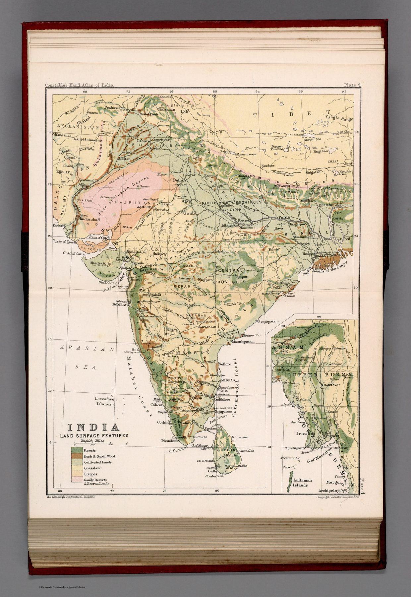

← Administered Empire and Victorian Atlas

The physical plate
Plate 4 reduces political detail in favour of a thematic key and an inset continuation, allowing land-surface and vegetation patterns to dominate.
Nature classified
Relief, surface type and plant cover are separated from the general map and represented as their own layer of knowledge. The method reflects a scientific geography increasingly concerned with distribution, comparison and causal relation.
An atlas of layers
Viewed beside the population-density plate, the map reveals the organising ambition of the atlas. India can be decomposed into distinct thematic subjects – physical form, vegetation, people, products and administration – and reassembled through a sequence of plates.
The gaze
Whether a reader needed to know where scrub gave way to forest is doubtful; the plate exists because the scheme of the atlas required it. Once India had been split into layers, each layer had to be supplied, and the land surface was given its own key and colour so that the set would be complete.